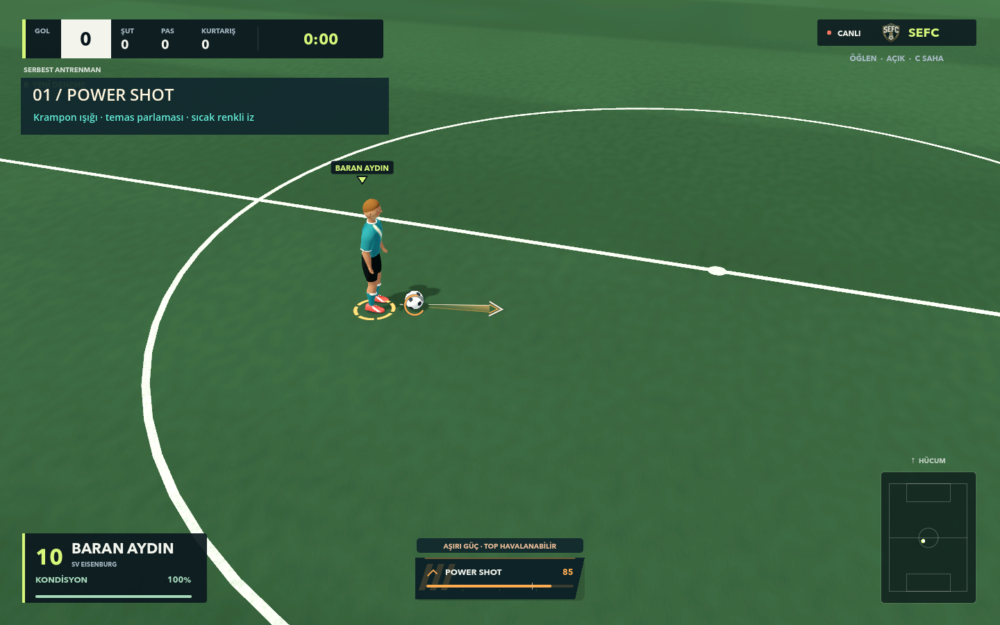
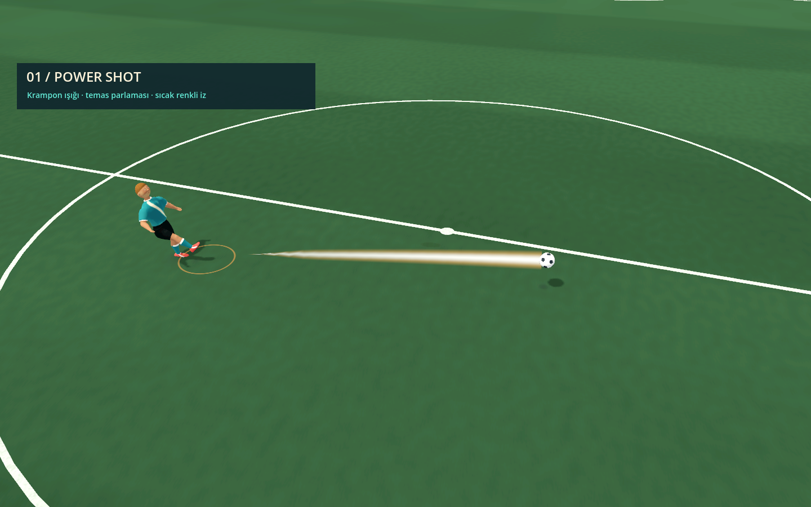
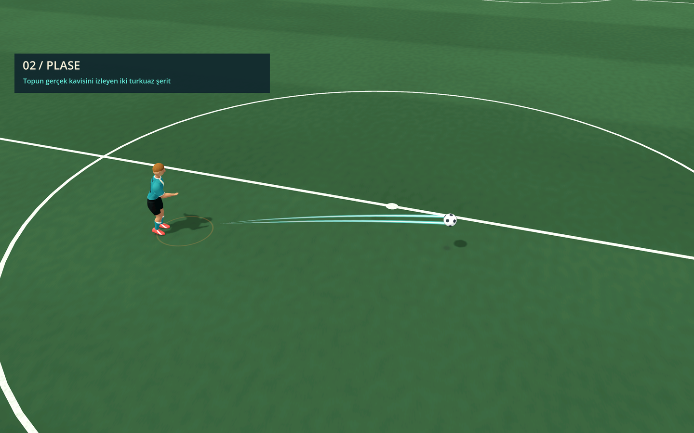
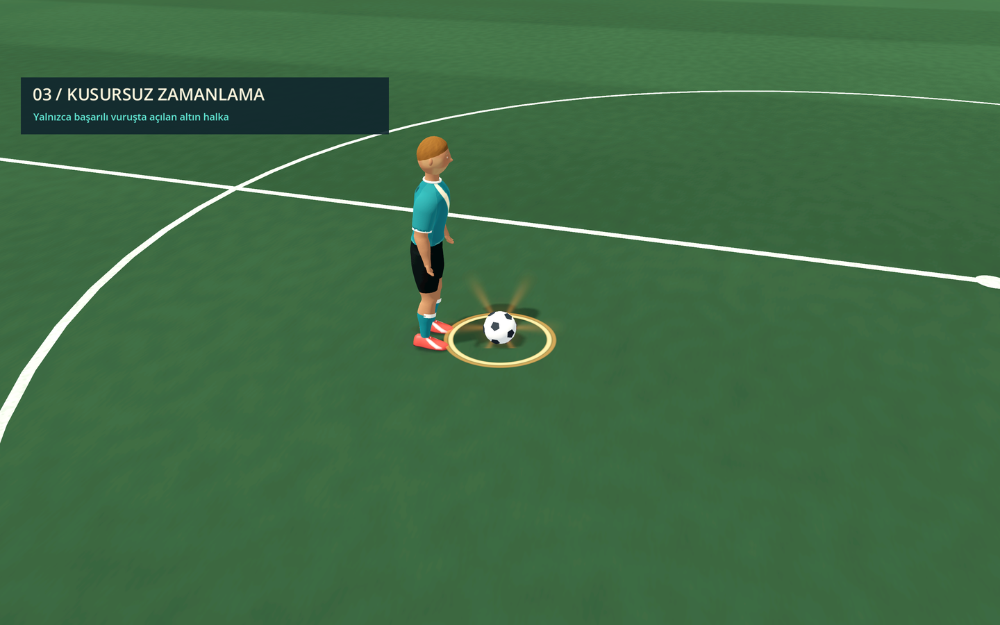
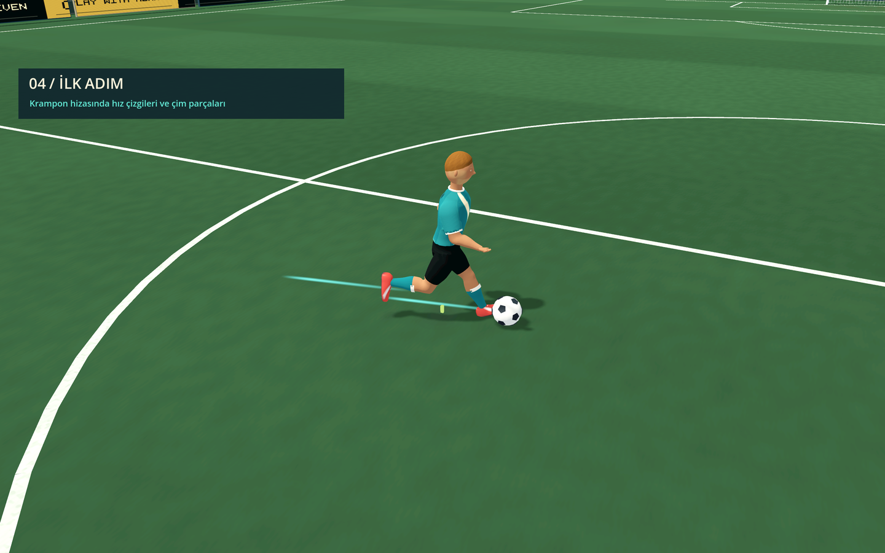
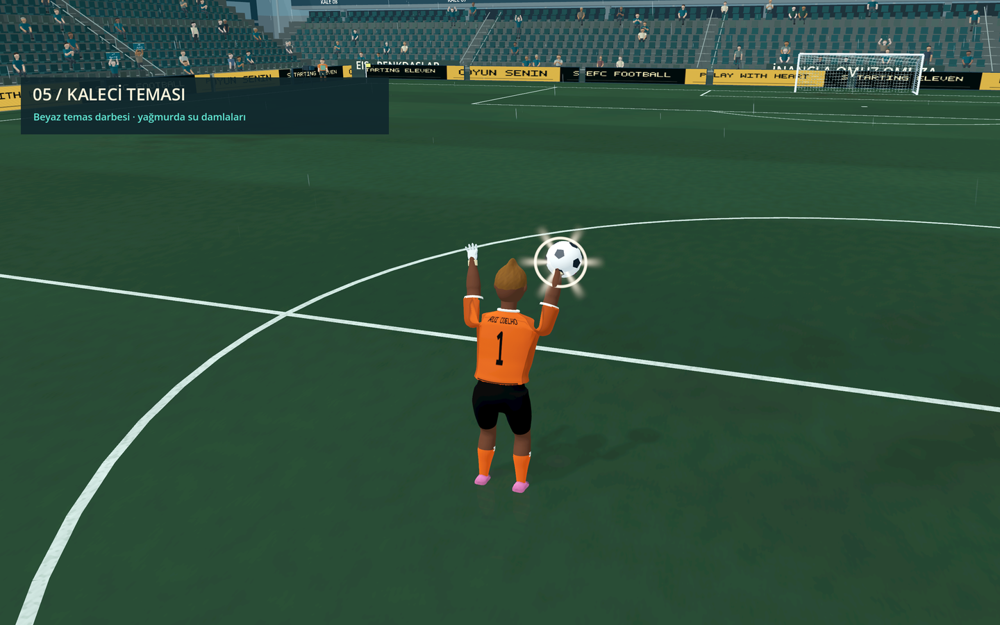
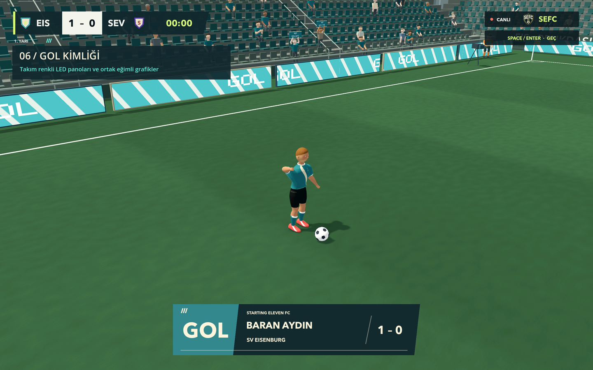

01 / HAZIRLIKGüç kramponda toplanıyorŞut dolarken kramponun altındaki ışık sıkılaşıyor. Güç göstergesi aynı sıcak rengi ve üç eğik çizgiyi taşıyor.
02 / POWER SHOTVuruşun gücü okunuyorKısa temas parlaması, zemin halkası ve parlak merkezli iz yalnızca gerçek vuruşta çıkıyor.
03 / PLASEİki ince turkuaz şeritPlase, farklı rengi ve çift iziyle ayrılıyor. Şeritler topun gerçek uçuş yolunu takip ediyor.
04 / ZAMANLAMADoğru anın altın halkasıHalka, zamanlama tuşuna basıldığında değil, başarılı temas gerçekleştiğinde açılıyor.
05 / İLK ADIMHızlanma ve yön değişimiKısa krampon çizgileri ve küçük çim parçaları ilk adımı vurguluyor. Sabit koşuda sürekli efekt üretilmiyor.
06 / KURTARIŞEldivende kısa beyaz darbeTemas ışığı eldivende beliriyor; ıslak havada küçük su parçacıkları ekleniyor.
07 / GOLSaha ve yayın grafikleri aynı dili konuşuyorLED panolar gol atan takımın renklerine geçiyor. İsimli gol bandı, skor, güç göstergesi ve tekrar geçişinde eğimli şeritler ile üç çizgi motifi kullanılıyor.